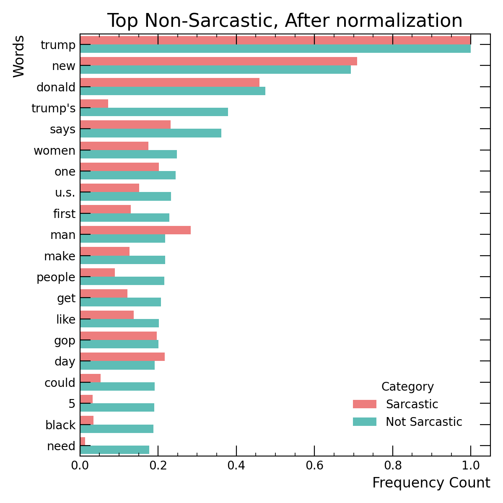
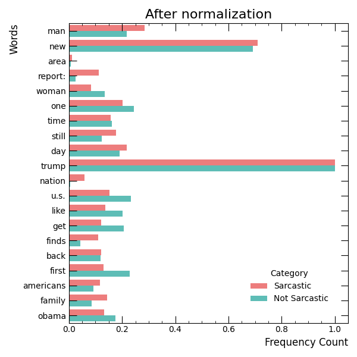
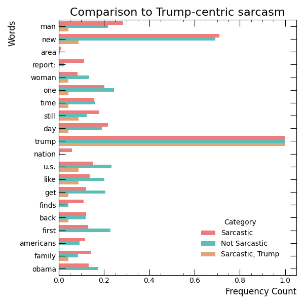

Figure 1A: Top non-sarcastic words and the relative frequency in the sarcastic data.

Figure 1B: Top sarcastic words and the relative frequency in the non-sarcastic data.
This repository studies improvements in generalization of fine-tuned BERT [1] models on sarcasm detection. The sarcasm detection dataset used consists of headlines from The Onion and HuffPost [2]. The distribution of individual features in the data was highly skewed: for example, the words "Donald" or "Trump" almost exclusively occured in the HuffPost headlines, and rarely in headlines from The Onion. Of course, this may lead to a model which predicts any sentence referencing Donald Trump to not be sarcastic, while some of them may be. In order to address this, the dataset was weighted to balance the individual feature frequency across the headlines from The Onion and HuffPost. Then, the two trained models were compared on a dataset of headlines from a sibling publication of The Onion, Clickhole, to test if any improvement in Trump-centric sarcasm was measured.
The main questions addressed were:
Figure 1 shows the frequency of the top 20 words for both the sarcastic and non-sarcastic datasets. Stopwords are removed from the datasets before computing word frequency. The top words from sarcastic headlines come from formats like "Area man..." and "New Report: ...". These seem to be related to the dataset's (purposeful) bias towards headlines. In the non-sarcastic data however, there is a heavy bias towards specific nouns including Donald Trump. It appears that the sarcastic headlines are a more formulaic caricature of news, and mention specific figures less. This relative difference in the occurance of specific features in the dataset is addressed by weighting the data to remove the bias.
Figure 1A: Top non-sarcastic words and the relative frequency in the sarcastic data.
Figure 1B: Top sarcastic words and the relative frequency in the non-sarcastic data.
The weighting procedure is to first weight by the length of the headline, and then by a set of specific terms one by one in order to account for the imbalance between the headlines from The Onion and HuffPost. The list of words used focuses on the largest imbalances seen in the top 20 words, and is ordered with likely more specific terms coming first. For example, "donald" is weighted before "trump" because nearly all headlines with "donald" will have the word "trump", but not vice-versa. The list of words weighted by is: gop, donald, trump, man, area, report, says, women, nation. The weighted distributions of word frequency are shown in Figure 2.

Figure 2A: Top non-sarcastic words and the relative frequency in the sarcastic data, after weighting.

Figure 2B: Top sarcastic words and the relative frequency in the non-sarcastic data, after weighting.
The distributions of weighted frequency demonstrate higher agreement, but a sample of Trump-centered sarcasm is needed as a benchmark to test if any improvement in accuracy is seen. A sample of headlines from Clickhole, a sibling publication of The Onion, is used as a final validation dataset in the fine-tuning. Figure 3 shows the distribution of feature frequency in the Clickhole Trump-centered dataset vs the sarcastic and non-sarcastic dataset. By definition, every headline in the Clickhole dataset will include the word "trump".

Figure 3: Top words in the sarcastic and non-sarcastic datasets, compared to a sample of Trump-centric sarcasm.
The findings suggest that generalization was improved when the weighted dataset was used. The F1 score on the original dataset was simultaneously improved, suggesting that rather than picking up on individual features the BERT model fine-tuned with weights is more likely to extract higher level meaning from the dataset.